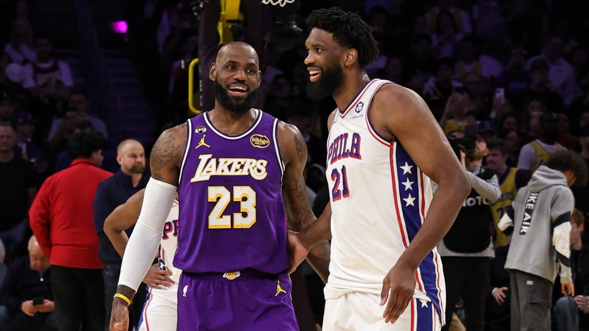
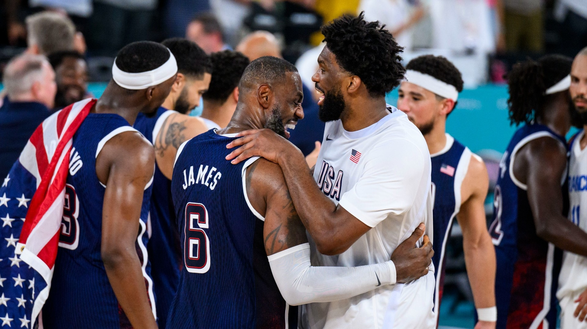
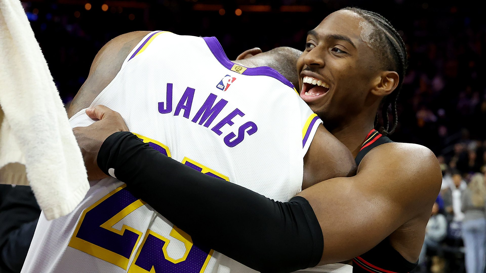

历史得分王 · 4×总冠军 · 4×MVP · 第24个赛季的传奇远征
追踪国王的每一步。本板块数据每日自动更新，来源为 NBA 官网、ESPN 及权威记者报道。
1984年12月30日出生于俄亥俄州阿克伦，2003年以状元身份登陆NBA。23个赛季、1622场常规赛——他面对的对手占NBA历史全部球员的36%。以下是截至2025-26赛季结束的真实生涯总账。
从18岁的20.9分到41岁的20.9分——起点与此刻奇妙重合，中间是历史最长的巅峰曲线。切换维度，逐季审视。
| 赛季 / 球队 / 荣誉 | 出场 | 得分 | 篮板 | 助攻 | 投篮% | 三分% |
|---|
42年人生、24季征程。向下滚动，沿时间之河横渡国王的整个故事。
克利夫兰—迈阿密—克利夫兰—洛杉矶—费城。每一次选择都改写联盟格局，每一站都留下总冠军或不可磨灭的印记。
2026年7月24日，詹姆斯在社交媒体宣布加盟费城76人——「我以为一切都结束了……但我仍然热爱这项运动，我还有东西可以奉献。」



「这是我最后的决定。不为金钱，不为家庭。我依然想要牺牲、想要苦练、想要磨砺、想要竞争、想要赢，想要再一次感受赢得总冠军的滋味。我相信我能帮助费城76人成为一支冠军球队。」
他将与乔尔·恩比德、泰瑞斯·马克西、杰伦·布朗组成豪华四巨头——上赛季的76人45胜37负止步东部半决赛，而詹姆斯生涯12次打进分区决赛。宾州州长已宣布签约日为「勒布朗·詹姆斯日」。1983年之后，费城一直在等待它的下一座奥布莱恩杯。
首位现役十亿美元身家的NBA球员（福布斯，2022）。商业、公益、家庭——球场之外，他构建了同样恢宏的第二人生。
全部图片取自 NBA 官方渠道（cdn.nba.com）真实赛场影像，点击可放大浏览。